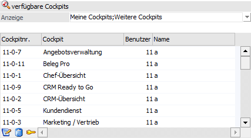
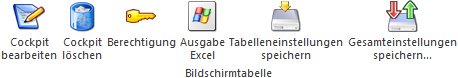

In der Tabelle "verfügbare Cockpits" werden, abhängig von der Applikation, die zur Verfügung stehen Cockpits des Benutzers angezeigt.
ü WinLine START
Es werden die
Cockpits der WinLine START und / oder CRM Cockpits (erzeugt über den "Workflow
Wizard") dargestellt.
ü WinLine INFO
Es werden die
Cockpits der WinLine INFO dargestellt.

Ø Anzeige
Mithilfe der hier zur Verfügung stehenden Mehrfachauswahl kann definiert werden, welche Cockpits dargestellt werden sollen. Die gewählte Einstellung wird hierbei benutzerspezifisch gespeichert.
ü Meine Cockpits
Durch
Aktivierung dieser Option werden in der Tabelle "verfügbare Cockpits" alle
Cockpits mit der Objektberechtigung "Ersteller" angezeigt.
ü Meine CRM Cockpits (nur in WinLine
START)
Durch Aktivierung dieser Option werden in der Tabelle "verfügbare
Cockpits" alle Cockpits angezeigt, welche durch den "Workflow Wizard" erstellt
wurden und die Objektberechtigung "Ersteller" aufweisen.
ü Weitere Cockpits
Durch
Aktivierung dieser Option werden in der Tabelle "verfügbare Cockpits" alle
Cockpits mit der Objektberechtigung "Lesen" bis "Löschen" angezeigt.
ü Weitere CRM Cockpits (nur in
WinLine START)
Durch Aktivierung dieser Option werden in der Tabelle
"verfügbare Cockpits" alle Cockpits angezeigt, welche durch den "Workflow
Wizard" erstellt wurden und die Objektberechtigung "Lesen" bis "Löschen"
aufweisen.
ü Cockpits ohne
Berechtigung
Handelt es sich bei dem aktuellen Benutzer um einen
Volladministrator oder um einen Benutzer mit dem Teiladministrationsrecht
"Datenadministration", so steht diese Option zur Verfügung. Durch Aktivierung
dieser Option werden in der Tabelle "verfügbare Cockpits" alle Cockpits ohne
Objektberechtigung angezeigt.
ü CRM Cockpits ohne Berechtigung
(nur in WinLine START)
Handelt es sich bei dem aktuellen Benutzer um einen
Volladministrator oder um einen Benutzer mit dem Teiladministrationsrecht
"Datenadministration", so steht diese Option zur Verfügung. Durch Aktivierung
dieser Option werden in der Tabelle "verfügbare Cockpits" alle Cockpits
angezeigt, welche durch den "Workflow Wizard" erstellt wurden und keine
Objektberechtigung aufweisen.
ü Schnellanzeige Cockpits
Handelt
es sich bei dem aktuellen Benutzer um einen Volladministrator oder um einen
Benutzer mit dem Teiladministrationsrecht "Datenadministration", so steht diese
Option zur Verfügung. Mit Hilfe dieser Anzeige werden alle Cockpits, ohne eine
Prüfung der Objektberechtigungen, angezeigt.
ü Schnellanzeige CRM Cockpits (nur
in WinLine START)
Handelt es sich bei dem aktuellen Benutzer um einen
Volladministrator oder um einen Benutzer mit dem Teiladministrationsrecht
"Datenadministration", so steht diese Option zur Verfügung. Durch Aktivierung
werden in der Tabelle "verfügbare Cockpits" alle Cockpits angezeigt, welche
durch den "Workflow Wizard" erstellt wurden, wobei keine Prüfung der
Objektberechtigungen erfolgt.
Achtung
Bei Nutzung der Schnellanzeige darf keine andere Auswahl gleichzeitig aktiviert sein. Des Weiteren ist die Schnellanzeige sehr performant, die Darstellung der Farbgebung aber nicht möglich.
Ø Farbgebung
Mit Hilfe der folgenden farblichen Unterlegungen wird die Art des Cockpits und die Objektberechtigung visualisiert:
ü  - Cockpit (WinLine START / INFO) mit
Objektberechtigung "Ersteller"
- Cockpit (WinLine START / INFO) mit
Objektberechtigung "Ersteller"
ü - CRM Cockpit mit Objektberechtigung "Ersteller"
ü  - Cockpit (WinLine START / INFO) mit
Objektberechtigung "Lesen" bis "Löschen"
- Cockpit (WinLine START / INFO) mit
Objektberechtigung "Lesen" bis "Löschen"
ü - CRM Cockpit mit Objektberechtigung "Lesen" bis "Löschen"
ü - Cockpit (WinLine START / INFO) ohne Objektberechtigung
ü - CRM Cockpit ohne Objektberechtigung
Tabellenbuttons

Ø Cockpit-Bearbeiten
Durch Anwahl dieses Buttons kann das ausgewählte Cockpit bearbeitet werden.
Ø Cockpit löschen
Mit Hilfe dieses Buttons wird das ausgewählte Cockpit gelöscht.
Ø Berechtigung
Mit Hilfe des Buttons "Berechtigung" können die Berechtigungen für das ausgewählte Cockpitdefiniert werden.
Ø Ausgabe Excel
Durch Anwahl des Buttons "Ausgabe Excel" wird der Inhalt der Tabelle an Microsoft Excel übergeben.
Ø Tabelleneinstellungen speichern
Die Spalten einer Tabelle können grundsätzlich an beliebige Positionen verschoben, bzw. in der Breite entsprechend angepasst werden. Durch Anwahl des Buttons "Tabelleneinstellungen speichern" werden die Einstellungen benutzerspezifisch gespeichert und bei dem nächsten Aufruf des Programmpunktes wieder vorgeschlagen.
Ø Gesamteinstellungen speichern
Im Gegensatz zu "Tabelleneinstellungen speichern" können mit "Gesamteinstellungen speichern" mehrere Tabellenaufbauten gespeichert und nach Wunsch geladen werden. Zusätzlich werden Sonderfunktionen der Tabelle (z.B. "Spalte gruppieren") ebenfalls bei der Speicherung bedacht.